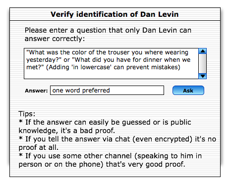
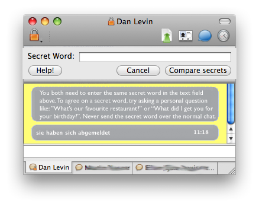
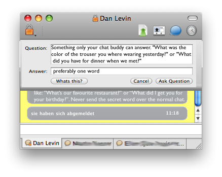

(With many thanks to Dan Levin for his help)
This is what I arrived at [blog:2008/08/19/19.49 last week] as an authentication GUI:

This GUI Design has several good and bad points - first the good ones:
- It tells the user exactly what he should do
- It gives help in how to achieve that
- It provides additional help on how to achieve this
The bad ones though weigh very heavy:
- Its a dialog.
- Its super text heavy
- it looks ugly (well not because of the design, but because it has so much text in it.)
The most pressing problem however is in the library support from OTR. It simply does not know what a question is.
This is a problem, because it makes it almost impossible to have the Question as a special entitiy in the GUI - and also that none of the synchronisation problems that this brings are adressed in the GUI. So what to do if both users start typing their own question? The other User wouldn't know - then how does the programm tell the user that his question was just overruled be the other persons and that he should provide the answer to that as the secret word?
There is more of course - but this is what I consider the most important.
Well, this is our current approach at solving these problems:

This is what I like about this:
- No more dialog, it's all happening inline
- It clearly states what goes where in clear statements
- It tells the user in clear terms what he needs to do and how to do it
- Only as much text as is absolutely needed
- Provides more help should the user request it.
Especially this is the most simple GUI of all the approaches that I tried.
I don't have finished mockups of the other aproaches (most is pen'n'paper work) but I did try having the question and answer thing inline like so:

I especially like the fact that this gives lots of practical information to the user - even if it is still very wordy and does not solve the race condition of who will actually ask the question.
Therefore we decided to go with the first aproach pictured above.
There is of course more to this GUI than just the pretty pictures shown above. A few more things come to mind, that we think are very important:
- The normal chat window can and should be used as a feedback and instruction window. (With help messages clearly marked as such of course.) We want to use this to show some initial help when the "Verify" button is clicked and the authentication process is started and also at least when the authentication process fails multiple times, to provide additional help and tips as to how to overcome this situation.
- Whenever the user types the secret word in the normal chat we want to either clearly notify the user that he has just compromised his password exchange and needs to choose a new question and answer (also if it is in the recent history) or we'd like to prevent the sending of the message (perhaps with a dialog box that also allows to proceed if that is really wanted).
One unsolved problem is, that when the authentication fails multiple times, we need to find a good compromise between teaching the user about ways to prevent errors and making him aware of the possibility that there may be a man in the middle attack taking place.
Of course, just as the last time: Feedback welcome.